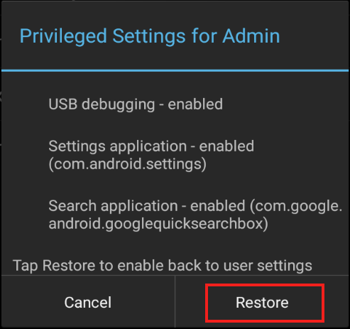

概要
このガイドでは、キオスク モードや EHS ロギングなどの高度な EHS 機能について説明します。Enterprise Home Screen の実用的な知識と、enterprisehomescreen.xml 構成ファイルを直接操作することでその詳細設定を使用できることを想定しています。これらの手順に慣れていない場合は、続行する前に、「概要」ページと「セットアップ」ページおよび「詳細設定ガイド」を参照してください。
注: EHS のデバイス セキュリティ機能の多くは、デバイス上で手動で、EMDK を介してプログラムで、または StageNow またはサードパーティの Enterprise Mobile Management (EMM) システム (EMM システムでサポートされている場合) を使用してリモートで行うことができます。EHS は、機能を 1 つのツールにまとめます。
注: セキュア モードは EHS 3.0 以降では廃止されています。
スクリーン ブランキング
EHS 4.1 以降では、スクリーン ブランキングがサポートされています。この機能は、GPS システムが動きを検知すると、黒いオーバーレイまたは透明のオーバーレイをデバイス画面に自動的に配置して、タッチ入力を無効にします。スクリーン ブランキングは、EHS を車内で使用する場合の安全対策になっています。運転時の不注意で損傷または損失が発生しても、Zebra は一切の責任を負いません。
要件
- Google Play サービスに対応した GMS デバイスでのみサポートされます
- グローバル ポジショニング システム (GPS) が有効になっており、デバイス内で機能している必要があります
重要:
EHS スクリーン ブランキングは、GPS を使用して車両の動きを判断します。デバイスは、衛星を検出して位置データの取得を開始します。したがって、初回利用時には、スクリーン ブランキングが機能するまで、長い時間がかかる可能性があります。建物やトンネルなどの障害物で GPS 信号が遮断され、車両の走行中に、スクリーン ブランキングが無効になる場合があります。通常の使用時に、GPS 信号が 5 分以上遮断されると、EHS は自動的にスクリーン ブランキングを無効にするように設計されています。GPS 信号が回復すると、スクリーン ブランキングは再び自動的に有効になります。
運輸局に関する警告:
EHS ディスプレイ ブランキング機能は、運輸局の規則または規制に従って開発されたものではありません。運転時の不注意で損傷または損失が発生しても、Zebra は一切の責任を負いません。
注意事項
- オーバーレイが表示されている場合、すべてのタッチ入力はブロックされますが、以下の場合を除きます。
- ステータス バーをプルダウンして、通知を表示したり、通話を受信したりできます。†
- ナビゲーション バー (戻る、ホーム、履歴キー)。‡
- ブランキングがアクティブの場合、着信電話コールはステータス バーから受けられます。†
- 車速の計算は、Google GPS location API の出力に基づいて実行されます。
- デバイスで Wi-Fi と Google 位置情報サービスの高精度を有効にしておくと、正確な位置情報が得られます。
- 透明オーバーレイの場合、マップなどのアプリを表示できますが、ユーザーはこれらを操作できなくなります。
- 次の場合、ブランキングは無効になります。
- 車速が低下し、設定された速度しきい値を 10 秒間下回った場合。
- GPS データを 5 分間受信しなかった場合。サービスは 5 分ごとに GPS 信号をチェックします。GPS 信号を再受信すると、ブランキングは再び自動的に有効になります。
- スクリーン ブランキングは、デバイス再起動後の初期化に数分かかる場合があります。
† 無効にするには、UI Manager を使用してステータス バーを無効にします。
‡ 画面ブランキングが有効な場合、ナビゲーション キーは次のように動作します。
- 戻る - 影響なし
- ホーム - ホーム画面を表示し、入力は受け付けません
- 履歴 - 最近使用したアプリを表示 (EHS で有効になっている場合)し、入力は受け付けません
スクリーン ブランキングを有効にする
スクリーン ブランキングを有効にするには、デバイス管理者が、デバイスの [EHS 設定] パネルを使用するか、enterprisehomescreen.xml 構成ファイルの設定を使用します。このファイルの詳細については、『詳細設定ガイド』の「構成ファイルの操作」セクションを参照してください。
画像をクリックすると拡大表示され、Esc キーを押すと終了します。
例
<screen_blanking>
<blanking_enabled>1</blanking_enabled>
</screen_blanking>
使用可能な値:
- 0 - 無効 (デフォルト。オーバーレイは表示されない。タッチ入力は有効)
- 1 - 有効 (設定された速度しきい値に従ってタッチ入力が無効化)
速度しきい値
スクリーン ブランキングを有効化し、タッチ入力を無効化する車速 (マイル/時) を設定するために使用します (デフォルト = 10MPH)。最小値は 5MPH です。5 未満の値を入力すると、デフォルト値の 10 が使用されます。
画像をクリックすると拡大表示され、Esc キーを押すと終了します。
例
<screen_blanking>
<speed_threshold>10</speed_threshold>
</screen_blanking>
使用可能な値:
- 5 ～ ∞ (デフォルト値 = 10MPH)
ブランキング モード
スクリーン ブランキング モードを選択するために使用します。どちらのモードでも、タッチ入力は無効になります。オプション 1 の場合、画面に黒いオーバーレイが表示されます。データは表示されません。オプション 2 の場合、現在のアプリ上に透明なオーバーレイが配置され、データ (Google マップなど) を表示できます。
注: モードの変更は、ユーザーが EHS のホーム画面にアクセスした後に有効になります。
画像をクリックすると拡大表示され、Esc キーを押すと終了します。
例
<screen_blanking>
<blanking_mode>1</blanking_mode>
</screen_blanking>
使用可能な値:
- 1 (デフォルト、黒い画面)
- 2 - (透明スクリーン)
マルチユーザー モード
EHS 3.1 以降は、Android 8.x Oreo 以降を実行しているデバイスでマルチユーザー モードをサポートしています。この機能は、ユーザー プロファイルの概念に沿って機能し、これにより、プライマリ、セカンダリ、およびゲスト ユーザーが、それぞれ異なるアプリ、機能、およびアクセス権限のセットを使用できます。EHS では、マルチユーザー モードは以下のように動作します。
Android Pie を実行しているデバイスでマルチユーザー モードを使用している場合、プライマリ ユーザーとセカンダリ ユーザーを繰り返し切り替えると、アプリ アイコンがセカンダリ ユーザーのホーム画面に表示されないことがあります。この問題は、プライマリ ユーザーとしてログインしてからセカンダリ ユーザーとしてログインするか、デバイスを再起動することで解決できます。
ユーザー タイプ
- プライマリ ユーザー - デバイスに最初に追加されたユーザーで、工場出荷時リセットによってのみ削除できます。プライマリ ユーザーは、セカンダリ ユーザーがフォアグラウンドにある場合でも、常に実行されています。このユーザーは、セカンダリ ユーザーを追加したり、すべてのデバイス機能や設定にアクセスしたりする機能など、他のユーザーが利用できない権限を持っています。
- セカンダリ ユーザー - プライマリ ユーザーではないユーザー。セカンダリ ユーザーはバックグラウンドで実行し、ネットワーク接続を継続できます。セカンダリ ユーザーは、自分のアカウントを削除することも、他のユーザーに影響を与えずにプライマリに削除してもらうこともできます。
- ゲスト ユーザー - 不要になったときにすばやく (作成したデータとともに) 削除できる一時的なセカンダリ ユーザー。一度に 1 人のゲスト ユーザーだけがデバイスに存在できます。下記の「ゲスト ユーザーの動作」も参照してください。
マルチユーザーの動作
- デバイスがマルチユーザー モードの場合、SD カード スロットは無効になります。外部 SD カードには何も保存できず、外部 SD カードからは何も読み取ることができません。
- EHS がインストールされ、最初に起動されるときは、プライマリ ユーザーがデバイスのフォアグラウンドにいる必要があります。
- デバイスに展開されたプライマリ ユーザーの設定ファイルは、そのデバイスのすべてのユーザーに適用されます。
- プライマリ ユーザーが行った設定変更は、自動的にセカンダリ ユーザーに適用されます。
- セカンダリ ユーザーは、いかなる手段 (構成ファイル プッシュ、EHS UI など) でもデバイス設定を再構成することは禁止されています。
- プライマリ ユーザーのみアプリのアイコン サイズを変更できます。
- デバイスにプッシュされた EHS 構成ファイルは、セカンダリ ユーザーによって使用されず、プライマリ ユーザーがフォアグラウンドに来ると設定が有効になります。
- プライマリ ユーザーのホーム画面に固定されているショートカットは、セカンダリ ユーザーのショートカットには表示されません。また、その逆も同様です。
- プライマリ ユーザーのみが EHS 管理者モードにアクセスできます。
- 重要: 管理者モードのプライマリ ユーザーからセカンダリ ユーザーに切り替えると、管理者モード タイムアウト カウンタが停止します。理論的には、セカンダリ ユーザーがプライマリ ユーザーに戻り、デバイスの管理者モードの機能にアクセスできるようになります。
- カメラ アプリと検索アプリのアイコン (有効な場合) は、一時停止/再開後までユーザーを切り替えると、キーガード画面に表示されないことがあります。
ゲスト ユーザーの動作
デバイスでゲスト ユーザーに切り替えると、Android に [最初からやり直す] または [続行] のいずれかを選択するよう求めるプロンプトが表示されます。
- [最初からやり直す] - デスクトップからすべてのアプリ アイコンを削除し、以前のゲスト ユーザーが作成したデータを削除します。
- [続行] - アプリのアイコンを保持し、前回のゲスト セッション中に作成されたデータは削除しません。
Zebra では、EHS で作業する場合、[続行] を選択することをお勧めします。[最初からやり直す] を選択すると、ゲスト アカウントから (EHS を含む) すべてのアプリが削除されます。
注: 一度に 1 人のゲスト ユーザーだけがデバイスに存在できます。
GMS 制限モード
Android 8.x Oreo 以降を実行している GMS デバイスでは、GMS 制限モードという機能が実装されています。これは、管理者の設定に基づいてデバイスで GMS のアプリケーションおよびサービス (Gmail、Google マップなど) を無効にするオプションの状態です。これらのアプリとサービスは、EHS を実行しているデバイスでも無効になっていますが、名前は [EHS 設定] -> [アプリケーションの無効化] パネルに表示されたままです。
EHS 設定 UI または構成ファイルをプッシュすることで、影響を受けるアプリのいずれかを有効化しようとすると失敗し、EHS ログに追加されます。特権設定 UI を使用して GMS アプリを有効にしようとすると、画面にエラー メッセージも表示されます。
キオスク モード
キオスク モードは、デバイスが 1 つのアプリケーションを (多くの場合、タッチベースの UI で) 実行するように設計されています。たとえば、小売価格チェッカー、自動車部品検索、患者のチェックイン システムなどがあります。キオスク モードは、小売店の店員のハンドヘルド バーコード スキャナなど、デバイスを 1 人のユーザーやタスク専用にする場合にも便利です。キオスク モードでは、アプリが全画面モードになり、キオスク アプリの最新のアクティビティに戻るキーとホーム キーをマッピングすることで、戻るキーやホーム キーを使用してアプリを終了できないようにしています。
また、ホーム キーおよび戻るキー機能を変更せずにキオスク モードと同様の機能を提供する EHS 自動起動機能も参照してください。
キオスク モード タグ:
<kiosk> - キオスク モードが有効な場合に実行されるアプリを指定します
<kiosk_mode_enabled> - 機能のオンとオフを切り替えます
キオスク モードを有効にする
enterprisehomescreen.xml ファイル内で、以下の手順を実行します。
- 構成ファイルの <kiosk> セクションでキオスク アプリを指定します。
- ファイルの [設定] セクションの <kiosk_mode_enabled> タグに値「1」を入力します。
- キオスク モードで USB デバッグが必要な場合は、<usb_debugging_disabled> タグに値「0」を入力します。
(詳細は、後述の「キオスク モードを無効にする」を参照してください)。
セキュリティ メモ: キオスク モードを使用する場合は、キオスク モードの保護を無効する、「キーの再マッピング」やその他の考えられるアプリケーションを起動する方法を無効にしてください。
キオスク モードを無効にする
キオスク モードを有効にすると、次の 2 つの方法のいずれかでのみ (カスタム プログラム コードを記述せずに) 無効にできます。
USB デバッグがユーザー モードで無効になっていない場合は、<kiosk_mode_enabled> タグの値が「0」の構成ファイルをデバイスにプッシュして、キオスク モードを無効にします。
USB デバッグがユーザー モードで無効になっている場合は、工場出荷時リセットを実行します。
キオスク モードをプログラムで制御する
キオスク モードは、Android インテントを使用して Android アプリケーション内から制御できます。次の JavaScript コードは、キオスク モードをプログラムで有効または無効にする方法を示しています。
//Disable Kiosk Mode:
Intent intent = new Intent("com.zebra.mdna.enterprisehomescreen.actions.MODIFY_KIOSK_MODE");
Intent.putExtra("enable",false);
sendBroadcast(intent);
//Enable Kiosk Mode:
Intent intent = new Intent("com.zebra.mdna.enterprisehomescreen.actions.MODIFY_KIOSK_MODE");
Intent.putExtra("enable",true);
sendBroadcast(intent);
セキュリティ メモ: キオスク モードを使用する場合は、キオスク モードの保護を無効する、「キーの再マッピング」やその他の考えられるアプリケーションを起動する方法を無効にしてください。
特権設定
WS50 デバイスではサポートされていませんが、個々のパラメータは手動で制御できます。詳細はこちら。EHS 3.0 (以降) では、管理者モードに入るときに自動的に有効になっていた一部の機能を手動で有効にする必要があります。EHS では、以下が特権設定と呼ばれます。
- USB デバッグ
- Android 設定パネル アプリ
- Google 検索アプリ
特に、USB デバッグを有効にすると、Android Debug Bridge (adb) と、デバイスとの間でファイルを転送するその機能が有効になります。デバイスの特権設定状態は、ユーザーが管理者モードに入るたびにポップアップで示されます。 [OK] をタップして閉じます。
[OK] をタップして閉じます。
3 つの特権設定はすべて、管理者モード UI コントロールを使用してグループとして有効化され、ユーザー モードを再起動すると自動的に無効化されます。
特権設定にアクセスするには:
- 管理者モードで、[ツール] -> [管理者の特権設定] に移動します。

- 現在の状態 (無効) が表示されます。
[有効] をタップして、特権設定を有効にします。
- 特権設定はすぐに有効になります。[OK] をタップして続行します。

管理者のためのメモ: 特権モードのタスクが完了したら、必ず設定を復元してください (USB デバッグ、設定アプリ、検索アプリを無効にするため)。 WS50 デバイスではサポートされていません。詳細はこちら。
特権設定を無効にするには:
- [ツール] -> [管理者の特権設定] に移動します。
- 現在の状態 (有効) が表示されます。
[復元] をタップして、3 つの機能をすべて無効にします。 - 機能はすぐに無効になり、確認ダイアログが表示されます。
[OK] をタップして続行します。
EHS ログ
EHS は、すべての主要なアクティビティ、失敗、およびセキュリティ イベントを /enterprise/usr/enterprisehomescreen.log ファイルに記録します。これには、管理者モードへの移行の失敗、オペレーティング モードの切り替え、すべての EHS エラーが含まれます。このログはプレーン テキスト ファイルであり、ADB または EMM で取得して、任意のテキスト エディタで表示できます。
マルチユーザー モードでは、ユーザー イベントは次のようにタグ付けされます。
- プライマリ ユーザー - -
User_0 - セカンダリ ユーザー -
User_10、User_11など
ロギングの詳細については、「ロギング設定」を参照してください。
 EHS 2.7 以降では、UI または構成ファイルを使用してロギングを有効/無効にできます。
EHS 2.7 以降では、UI または構成ファイルを使用してロギングを有効/無効にできます。
重要: セキュア モードは EHS 3.0 以降では廃止されています。ログ ファイルは、ログ エントリで [セキュリティ保護あり] または [セキュリティ保護なし] として指定されなくなりました。
セキュリティ メモ
このセクションでは、デバイスのセキュリティやアプリケーションの動作に影響を与える可能性がある EHS と Android の機能間の重要な相互作用について説明します。
最近使用したアプリ リスト
- 最近使用したアプリ リストからアプリにアクセスすると、セキュリティ上のリスクが発生する可能性があります。リストから消去されていないアプリは、戻るボタンを使用して有効にでき、EHS 以外のホーム画面が表示される可能性があります。
- Android Oreo 以降を実行しているデバイスでは、[最近使用したアプリ] ボタンを有効化/無効化できます。マルチウィンドウ モードを使用しないようにするために、デフォルトでは無効になっています。
- デフォルトでは、EHS はユーザーが起動したアプリやアクティビティを Android の最近使用したアプリ リストに追加しません。ただし、このようなアプリ/アクティビティは、リストに表示され、セキュリティ リスクをもたらす他のアプリ/アクティビティを後から起動する可能性があります。
- EHS 4.0 では、ユーザーが最近起動したアプリのリストへのユーザー アクセスを許可 (またはブロック) するオプションが導入されています。
- 許可すると、EHS はユーザーによって起動されたアプリを最近使用したアプリ リストに表示します。
- ブロックすると、すべてのアプリ/アクティビティがユーザーによる表示から非表示になります。
- 一部のデバイスでは、再起動後に最近使用したアプリ リストが保持されます。EMDK、StageNow、またはサードパーティの EMM システムから App Manager を使用して、リストをクリアします。
- 最近使用したアプリを手動でクリアするには、リストが表示されるまでホーム ボタンまたはメニュー ボタン (デバイスによって異なります) を長押しして最近使用したアプリ リストを表示し、各アプリをスワイプするか、[すべて閉じる] ボタンをタップします。
その他の意図しないアクセス
- ユーザーは、設定アプリが EHS によって無効になっている場合でも、通知ドロップダウンの [クイック設定] パネルから機内モード、Wi-Fi、Bluetooth、その他のデバイス設定にアクセスできます。これは、StageNow または EMDK から UI Manager を使用して構成可能な設定で防止できます。
- ワイヤレス機能も、以下の MX モジュールを使用して個別に無効にすることができます。
- 機内モードと Wi-Fi の SettingsMgr
- クイック設定と「歯車」アイコンの UiMgr
- Bluetooth、GPS、NFC、および WWAN の WirelessMgr
- Mx モジュールは、EMDK または StageNow ツールを使用してアクセスできます。
- ユーザー モードで (「音量ダウン」ボタンと「電源」ボタンを同時に押して) スクリーンショットを撮ると、ギャラリー アプリまたは Gmail や MMS などの画像の共有に使用されるアプリが表示される場合があります。これを防止するには、「オプションの機能タグ」セクションの「アプリケーションの無効化/有効化」セクションで、該当する不要なアプリを無効化します。
- Android の [システム設定] パネルのプログラム可能キー機能を使用して、アプリケーションを起動するキーをプログラムする場合、そのキー マッピングはユーザー モードで使用できます。
Bluetooth ユーザー アクセス
EHS では、デバイスがユーザー モードまたは管理者モードのときに、デフォルトで設定アプリ (com.android.settings) が無効になります。これにより、「BT ペアリング ユーティリティ」が Bluetooth を有効にしてデバイスとペアリングできないようにします。この機能を許可したい組織の場合、EHS では、Bluetooth 制御を有効にしながら、他のほとんどの設定パネル機能へのアクセスを制限できます。
Bluetooth を有効にするには:
- アプリの有効化/無効化機能を使用して、設定アプリを有効化します。
- ユーザー モードで Bluetooth のオン/オフを切り替えることができる、システム設定の制限機能を有効にします。
これで、BT ペアリング ユーティリティが正常に動作するようになりました。
注: システム設定制限機能を使用すると、デバイスのユーザーは、ディスプレイとサウンドの設定および [デバイス情報] 画面にアクセスできます。